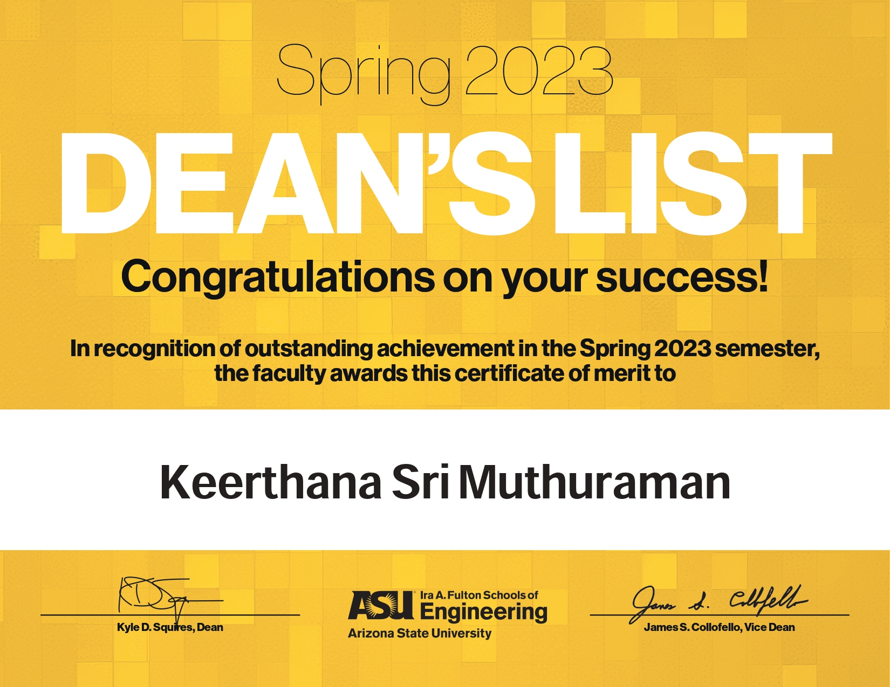
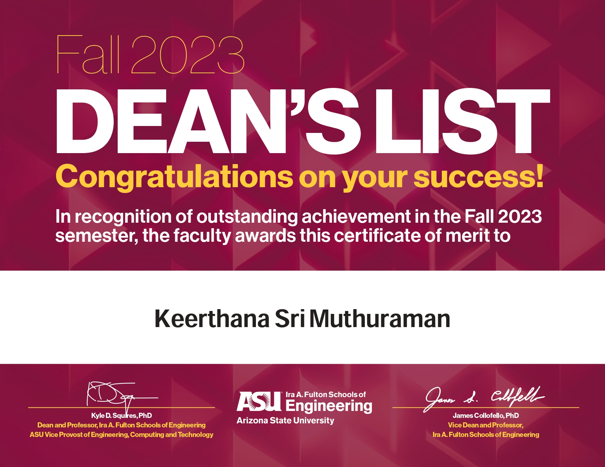
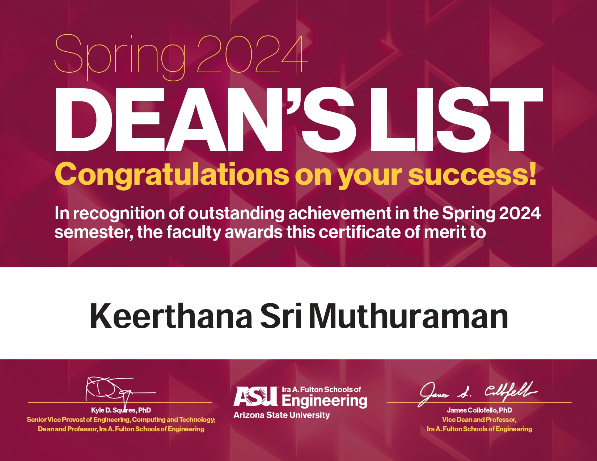

Education
BS Computer Science, Junior
Cumulative GPA : 3.59/4.0
Expected Graduation: May 2026
- 
- 
- 
I am a Junior at Arizona State University, majoring in Computer Science with a strong interest in AI/ML, data science, web development, and software engineering. Passionate about learning new skills, I am constantly exploring the latest technologies and methodologies to enhance my knowledge and abilities. In addition to my technical pursuits, I enjoy playing sports, which helps me stay active and balanced. I am eager to leverage my expanding expertise in real-world projects and collaborate with others who share my enthusiasm for innovation and continuous learning.
BS Computer Science, Junior
Cumulative GPA : 3.59/4.0
Expected Graduation: May 2026
January 2024 - June 2024
Objective: Develop a comprehensive movie recommendation system that enhances user experience by suggesting movies based on various factors such as popularity, content, and user behavior.
Technologies Used: Python, Pandas, NumPy, Scikit-learn, Natural Language Processing (NLP), Collaborative Filtering.
November 2023 - December 2023
Objective: Design and implement a microprocessor using digital logic and Verilog, focusing on creating Finite State Machines (FSMs) through state diagrams and transition tables.
Technologies Used: Verilog, Digital Logic Design, Finite State Machines (FSM), ModelSim, FPGA.
October 2022 - December 2022
Objective: Develop an automated car system using MATLAB and robotics tools to assist the elderly and handicapped with transportation.
Technologies Used: MATLAB, BrickLink , RoboSIM, Sensors, Actuators.
July 2024 - Present
July 2024 - Present
June 2023 - July 2023
August 2023
July 2023 - August 2023